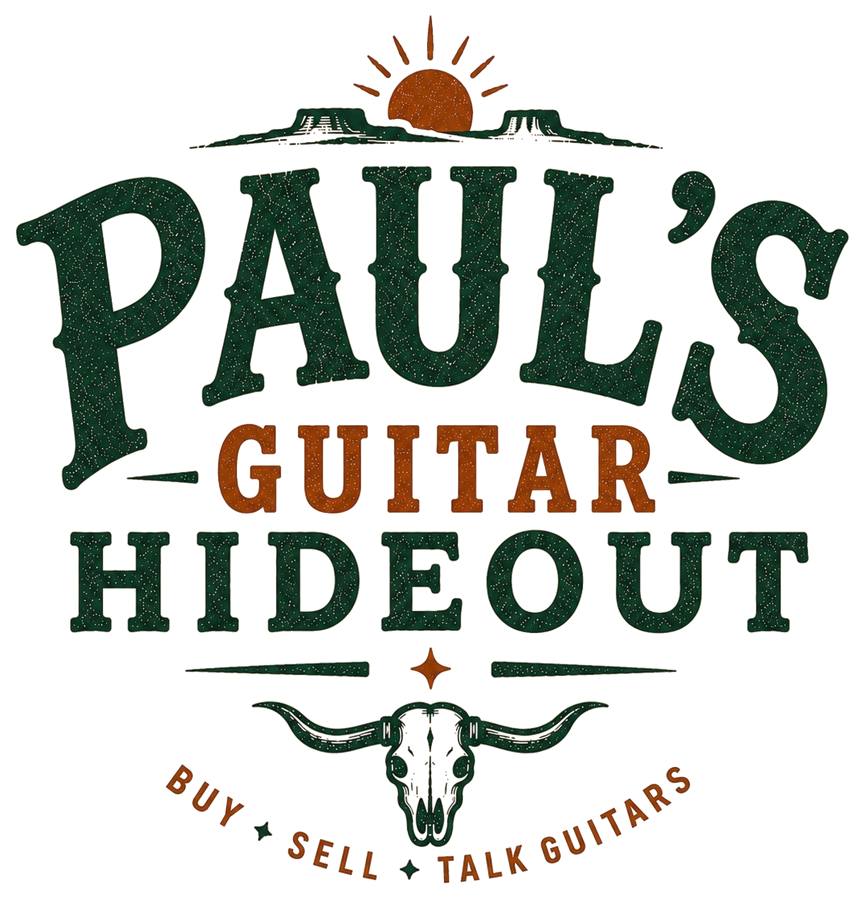

<!doctype html>
<html lang="en">
<head>
<meta charset="utf-8">
<meta name="viewport" content="width=device-width,initial-scale=1">
<title>PGH Signage</title>
<!-- Shop TV signage screen. Each LG TV opens this page via Play Via URL.
     Paul 2026-11-10: a showreel of what the animation can do, "tasteful, elegant and beautiful", in his darker
     Twin Peaks / David Lynch emotional fingerprint. Scenes are GPU-drawn in fx.js. Our own work in that spirit:
     no show names, logos, characters or quotes. Brand: forest #1F3B2D, cream #F2EAD3, rust #B5562A, Playfair + Inter, the logo. -->
<link rel="preconnect" href="https://fonts.googleapis.com">
<link rel="preconnect" href="https://fonts.gstatic.com" crossorigin>
<link href="https://fonts.googleapis.com/css2?family=Playfair+Display:ital,wght@0,500;0,700;1,500;1,600&family=Inter:wght@400;600&display=swap" rel="stylesheet">
<style>
:root{
  --cream:#F2EAD3; --cream-dim:#d9cfb4; --forest:#1F3B2D; --night:#06100c; --rust:#B5562A; --rust-lt:#d6865c;
  --serif:"Playfair Display",Georgia,serif; --sans:Inter,"Helvetica Neue",Arial,sans-serif;
}
*{box-sizing:border-box;margin:0;padding:0}
html,body{width:100%;height:100%;background:#000;overflow:hidden;cursor:none}
#stage{position:absolute;left:0;top:0;width:1920px;height:1080px;transform-origin:0 0;overflow:hidden;background:var(--night)}

/* slow dissolve between scenes, with a slight settle */
.slide{position:absolute;top:0;right:0;bottom:0;left:0;opacity:0;visibility:hidden;z-index:2}
#slides{position:absolute;top:0;right:0;bottom:0;left:0;z-index:1}
#gl{position:absolute;left:0;top:0;width:1920px;height:1080px;z-index:0}
.slide.on{visibility:visible;z-index:3;animation:dissolve 2.6s ease-in-out forwards}
.slide.off{visibility:visible;z-index:2;animation:fadeout 2.6s ease-in-out forwards}
@keyframes fadeout{from{opacity:1}to{opacity:0}}
@keyframes dissolve{from{opacity:0}to{opacity:1}}
.slide.video{background:#000}
.slide canvas{position:absolute;top:0;right:0;bottom:0;left:0;width:1920px;height:1080px}
.slide canvas.motes{pointer-events:none;z-index:3}

.flag{position:absolute;right:40px;top:40px;font:600 22px/1 var(--sans);letter-spacing:.2em;background:#c00;color:#fff;padding:12px 20px;z-index:30}

/* type: quiet, cinematic. Lines resolve out of a blur, letters drawing in. */
.text{position:absolute;z-index:5}
.kicker{font:600 26px/1 var(--sans);letter-spacing:.5em;text-transform:uppercase;color:var(--rust-lt)}
.headline{font:500 140px/1.02 var(--serif);color:var(--cream);letter-spacing:-.005em;margin:34px 0 34px;text-shadow:0 0 40px rgba(242,234,211,.18)}
.line{font:400 44px/1.4 var(--sans);color:var(--cream-dim);max-width:1000px;letter-spacing:.01em}
.rv{opacity:0;filter:blur(14px)}
.on .rv{animation:resolve 3.2s cubic-bezier(.2,.6,.2,1) forwards}
@keyframes resolve{to{opacity:1;filter:blur(0)}}
.kicker.rv{letter-spacing:.9em}
.on .kicker.rv{animation-name:resolveK}
@keyframes resolveK{to{opacity:1;filter:blur(0);letter-spacing:.5em}}
.headline.rv{letter-spacing:.06em}
.on .headline.rv{animation-name:resolveH}
@keyframes resolveH{to{opacity:1;filter:blur(0);letter-spacing:-.005em}}
.rule{height:1px;width:0;background:linear-gradient(90deg,var(--rust-lt),transparent);margin-top:46px}
.on .rule{animation:rule 2.4s cubic-bezier(.2,.6,.2,1) forwards}
@keyframes rule{to{width:520px}}

/* WELCOME — the logo surfaces through the fog in cream light */
.welcome .mark{position:absolute;left:50%;top:50%;width:540px;margin:-290px 0 0 -270px;opacity:0;z-index:4;
  filter:brightness(0) invert(.93) sepia(.35) drop-shadow(0 0 26px rgba(242,234,211,.3)) blur(10px)}
.on.welcome .mark{animation:surface 6s 2.2s cubic-bezier(.2,.6,.2,1) forwards}
@keyframes surface{0%{opacity:0;transform:translateY(24px) scale(.98)}100%{opacity:.96;transform:none;filter:brightness(0) invert(.93) sepia(.35) drop-shadow(0 0 26px rgba(242,234,211,.3)) blur(0)}}
.welcome .breath{position:absolute;left:50%;top:50%;width:1400px;height:900px;margin:-450px 0 0 -700px;z-index:2;opacity:0;
  background:radial-gradient(ellipse,rgba(200,215,195,.10),transparent 60%)}
.on.welcome .breath{animation:breath 8s 3s ease-in-out infinite}
@keyframes breath{0%,100%{opacity:.2}50%{opacity:1}}

/* JUST IN — on the stage, in the spotlight */
.justin .frame{position:absolute;left:250px;top:150px;width:620px;height:720px;z-index:4;padding:14px;opacity:0;
  background:linear-gradient(145deg,#cdb98a,#7d6a45 40%,#d9c79a 60%,#6f5d3b);box-shadow:0 40px 90px rgba(0,0,0,.75),0 0 140px rgba(255,220,180,.12)}
.on.justin .frame{animation:resolveF 3s .8s cubic-bezier(.2,.6,.2,1) forwards}
/* the camera turns slowly left (+2 to -6 deg over 18 s), same yaw as fx.js: the frame turns about the viewer's eye in true 3D */
.justin{perspective:1080px;perspective-origin:960px 594px}
.justin .pan{position:absolute;top:0;right:0;bottom:0;left:0;z-index:4;transform-origin:960px 594px 1080px;transform:rotateY(2deg)}
.on.justin .pan{animation:turn 18s cubic-bezier(.45,0,.55,1) forwards}
@keyframes turn{to{transform:rotateY(-6deg)}}
@keyframes resolveF{from{opacity:0;transform:translateY(20px)}to{opacity:1;transform:none}}
.justin .frame div{width:100%;height:100%;overflow:hidden;background:#111}
.justin .frame img{width:100%;height:100%;object-fit:cover;transform:scale(1.12)}
.on.justin .frame img{animation:slowpush 18s ease-out forwards}
@keyframes slowpush{to{transform:scale(1.0)}}
.justin .text{left:1080px;top:250px;right:90px}
.justin .headline{font-size:116px}
.justin .price{font:italic 500 96px/1 var(--serif);color:var(--cream);margin-bottom:30px}

/* BENCH */
.bench .text{left:130px;top:150px}

/* LESSONS — the label turns with the record */
.lessons .text{left:130px;top:230px;max-width:1100px}
.lessons .headline{font-size:108px}
.lessons .label{position:absolute;left:1440px;top:562px;width:250px;height:250px;margin:-125px 0 0 -125px;z-index:4;opacity:.9;
  filter:brightness(0) invert(.9) sepia(.4)}
.on.lessons .label{animation:spin 1.8s linear infinite}
@keyframes spin{to{transform:rotate(360deg)}}
.lessons .arm{position:absolute;left:1820px;top:130px;width:26px;height:560px;z-index:5;transform-origin:13px 0;transform:rotate(18deg);
  background:linear-gradient(90deg,#3a3a3a,#d8d3c4 45%,#6d6a62);border-radius:13px;box-shadow:12px 18px 30px rgba(0,0,0,.6)}
.lessons .arm:after{content:"";position:absolute;left:-15px;bottom:-34px;width:56px;height:80px;border-radius:8px;background:linear-gradient(#2a2a2a,#111)}
.lessons .pivot{position:absolute;left:1788px;top:95px;width:90px;height:90px;border-radius:50%;z-index:6;background:radial-gradient(circle at 35% 35%,#e8e2d2,#5d5a52 60%,#1e1e1e)}

/* WE BUY — on the night road */
.webuy .text{left:130px;top:110px}

/* HOURS — a signal light swaying on its wire in the fog */
.hours .text{left:130px;top:120px}
.hours table{margin-top:10px;border-collapse:collapse;font:400 54px/1 var(--sans);color:var(--cream)}
.hours td{padding:24px 80px 24px 0;border-bottom:1px solid rgba(242,234,211,.16)}
.hours td:first-child{font:italic 500 56px/1 var(--serif);color:var(--rust-lt)}
.hours tr{opacity:0;filter:blur(10px)}
.on.hours tr{animation:resolve 2.6s cubic-bezier(.2,.6,.2,1) forwards}
.wire{position:absolute;left:0;top:0;width:1920px;height:200px;z-index:4}
.signal{position:absolute;left:1430px;top:84px;width:150px;z-index:5;transform-origin:75px 0}
.on .signal{animation:sway 7s ease-in-out infinite}
@keyframes sway{0%,100%{transform:rotate(-3deg)}50%{transform:rotate(3deg)}}
.signal .rod{width:6px;height:90px;margin:0 auto;background:#14130f}
.signal .box{width:150px;height:420px;border-radius:14px;background:linear-gradient(90deg,#0c0d0b,#23251f 50%,#0c0d0b);padding:22px 25px;box-shadow:0 30px 60px rgba(0,0,0,.6)}
.signal .lamp{position:relative;width:100px;height:100px;border-radius:50%;background:#16100e;margin-bottom:26px;box-shadow:inset 0 6px 14px rgba(0,0,0,.9)}
.signal .lamp i{position:absolute;top:0;right:0;bottom:0;left:0;border-radius:50%;opacity:0}
.signal .lamp b{position:absolute;left:50%;top:50%;width:900px;height:900px;margin:-450px 0 0 -450px;border-radius:50%;opacity:0;mix-blend-mode:screen;pointer-events:none}
.signal .r i{background:radial-gradient(circle at 40% 40%,#ffd0c0,#ff3b2f 45%,#8a0c08)} .signal .r b{background:radial-gradient(circle,rgba(255,60,40,.6),rgba(255,60,40,.14) 30%,transparent 60%)}
.signal .a i{background:radial-gradient(circle at 40% 40%,#fff0c8,#ffb347 45%,#8a5208)} .signal .a b{background:radial-gradient(circle,rgba(255,180,70,.55),rgba(255,180,70,.12) 30%,transparent 60%)}
.signal .g i{background:radial-gradient(circle at 40% 40%,#e0fff0,#3fe0a0 45%,#06603a)} .signal .g b{background:radial-gradient(circle,rgba(63,224,160,.55),rgba(63,224,160,.12) 30%,transparent 60%)}
.on .signal .r i,.on .signal .r b{animation:lr 15s infinite}
.on .signal .g i,.on .signal .g b{animation:lg 15s infinite}
.on .signal .a i,.on .signal .a b{animation:la 15s infinite}
@keyframes lr{0%,44%{opacity:1}46%,100%{opacity:0}}
@keyframes lg{0%,46%{opacity:0}48%,82%{opacity:1}84%,100%{opacity:0}}
@keyframes la{0%,84%{opacity:0}86%,98%{opacity:1}100%{opacity:0}}

/* LITE (TV) mode: picture backgrounds with slow camera moves, drifting fog, and text that animates with opacity/position only.
   Everything here is transform/opacity, which TV browsers composite smoothly. No WebGL, no filters, no blend modes. */
.bgimg{position:absolute;top:0;left:0;width:1920px;height:1080px;background-size:cover;background-position:center;z-index:0;transform:scale(1.06)}
.on .bgimg{animation:drift 16s linear forwards}
@keyframes drift{from{transform:scale(1.06) translateX(0)}to{transform:scale(1.06) translateX(-40px)}}
.on.webuy .bgimg{animation:drive 16s ease-in forwards;transform-origin:50% 52%}
@keyframes drive{from{transform:scale(1)}to{transform:scale(1.18)}}
.on.welcome .bgimg{animation:rise 16s ease-out forwards}
@keyframes rise{from{transform:scale(1.1) translateY(30px)}to{transform:scale(1.04) translateY(0)}}
.on.justin .bgimg{animation:sway 16s ease-in-out forwards}
@keyframes sway{from{transform:scale(1.06) translateX(20px)}to{transform:scale(1.06) translateX(-20px)}}
.fog{position:absolute;left:0;bottom:-60px;width:2400px;height:700px;background:url(assets/fog.png) repeat-x;background-size:2400px 700px;z-index:1;opacity:.4}
.fog.f2{left:-480px;bottom:-160px;height:820px;background-size:2400px 820px;opacity:.25;transform:scaleX(-1)}
.on .fog.f1{animation:fogL 40s linear infinite}
.on .fog.f2{animation:fogR 55s linear infinite}
@keyframes fogL{from{transform:translateX(0)}to{transform:translateX(-480px)}}
@keyframes fogR{from{transform:scaleX(-1) translateX(0)}to{transform:scaleX(-1) translateX(-480px)}}
.glint{position:absolute;left:0;top:640px;width:500px;height:440px;z-index:1;opacity:0;background:linear-gradient(90deg,transparent,rgba(255,236,200,.22),transparent)}
.on .glint{animation:glint 7s 1.5s ease-in-out infinite}
@keyframes glint{0%{opacity:0;transform:translateX(-500px)}20%{opacity:1}70%{opacity:1}100%{opacity:0;transform:translateX(1920px)}}
.tv #gl,.tv canvas.motes{display:none!important}
.tv .welcome .mark{filter:none!important}
.tv .on.welcome .mark{animation:markIn 4s 1.2s ease-out forwards!important}
@keyframes markIn{from{opacity:0;transform:translateY(24px)}to{opacity:.96;transform:none}}
.tv .lessons .label{filter:none!important}
.tv .signal .lamp b{mix-blend-mode:normal!important}
.tv .rv,.tv .hours tr,.tv .justin .frame{filter:none!important}
.tv .rv{letter-spacing:normal}
.tv .kicker.rv{letter-spacing:.5em}
.tv .headline.rv{letter-spacing:-.005em}
.tv .on .rv,.tv .on .kicker.rv,.tv .on .headline.rv,.tv .on.hours tr{animation-name:tvfade!important;animation-duration:1.6s!important}
@keyframes tvfade{from{opacity:0;transform:translateY(18px)}to{opacity:1;transform:none}}
.tv .slide.on,.tv .slide.off{animation-duration:1.4s}

/* Scene videos: decorations are part of the video, so the HTML copies are hidden; the still sits under the video until it starts. */
.slide video.bgv{position:absolute;top:0;left:0;width:1920px;height:1080px;object-fit:cover;z-index:0;background:transparent}
.sv .bgimg.still{animation:none!important;transform:none!important}
.sv .welcome .mark,.sv .welcome .breath,.sv .lessons .label,.sv .lessons .pivot,.sv .lessons .arm,.sv .wire,.sv .signal{display:none!important}
</style>
</head>
<body>
<div id="stage"></div>
<script>
// Render resolution. TVs have weak GPUs, so the scenes draw at a fraction of 1920x1080 and are scaled up
// (grain and glow hide the softness). ?scale= overrides; otherwise the TV starts at 0.5 and the page steps
// down by itself (remembered on the TV) if it can't hold a smooth frame rate.
(function(){ var q0=new URLSearchParams(location.search); window.FX_VIDEO = !q0.get('live') && !q0.get('capture'); /* LITE mode: what the TVs run */
  /* SCENE_VIDEO: each scene's animated background plays as a video (the TV's video chip, like Netflix); text stays live on top. */
  window.SCENE_VIDEO = false; if(window.FX_VIDEO && window.SCENE_VIDEO) document.documentElement.classList.add('sv'); if(window.FX_VIDEO) document.documentElement.classList.add('tv'); })();
(function(){ var q=new URLSearchParams(location.search), s=q.get('scale'), saved=null;
  try{ saved=localStorage.getItem('pgh-scale'); }catch(e){}
  window.FX_SCALE = s ? +s : (q.get('capture') ? 1 : (saved ? +saved : 0.5));
  window.FX_AUTO = !s && !q.get('capture');
})();
</script>
<script src="fx.js"></script>
<script>
// ?set=default (file in sets/), ?slide=N shows one slide only (for previews), ?speed=N divides durations.
var q = new URLSearchParams(location.search);
var SET = q.get('set') || 'default', ONLY = q.get('slide'), SPEED = +q.get('speed') || 1;
var stage = document.getElementById('stage');
function fit(){ var W=window.innerWidth||1920, H=window.innerHeight||1080, s=Math.max(W/1920, H/1080); stage.style.transform='translate('+((W-1920*s)/2)+'px,'+((H-1080*s)/2)+'px) scale('+s+')'; }
addEventListener('resize', fit); fit();
function esc(s){ return String(s==null?'':s).replace(/[&<>"]/g,function(c){return {'&':'&amp;','<':'&lt;','>':'&gt;','"':'&quot;'}[c];}); }
function rv(s, cls, delay){ return s ? '<div class="'+cls+' rv" style="animation-delay:'+delay+'s">'+esc(s)+'</div>' : ''; }
function block(s, t0){ return rv(s.kicker,'kicker',t0)+rv(s.headline,'headline',t0+.7)+rv(s.line,'line',t0+1.9)+'<div class="rule" style="animation-delay:'+(t0+2.6)+'s"></div>'; }
function scene(cls, fx, inner, extra){
  // LITE (TV) mode: the scene is a still picture with cheap motion on top (transform/opacity only); text stays live.
  if (window.FX_VIDEO && window.SCENE_VIDEO) return '<div class="slide '+cls+'"'+(extra||'')+'><div class="bgimg still" style="background-image:url(assets/scenes/'+cls+'.jpg)"></div><video class="bgv" src="clips/scenes/'+cls+'.mp4" muted playsinline preload="auto"></video>'+inner+'</div>';
  if (window.FX_VIDEO) { var fog=(cls==='welcome'||cls==='webuy'||cls==='hours')?'<div class="fog f1"></div><div class="fog f2"></div>':'';
    var glint=(cls==='bench')?'<div class="glint"></div>':'';
    return '<div class="slide '+cls+'"'+(extra||'')+'><div class="bgimg" style="background-image:url(assets/scenes/'+cls+'.jpg)"></div>'+fog+glint+inner+'</div>'; }
  return '<div class="slide '+cls+'" data-fx="'+fx+'"'+(extra||'')+'>'+inner+'</div>'; }
function motes(n, warm){ return '<canvas class="motes" width="1920" height="1080" data-n="'+n+'"'+(warm?' data-warm':'')+'></canvas>'; }

var R = {
  // A finished clip (an MP4 from anywhere). Muted: the shop music runs separately on the ZLX speakers.
  'video': function(s){ return '<div class="slide video"><video src="'+esc(s.src)+'" muted playsinline preload="auto" style="width:100%;height:100%;object-fit:cover"></video></div>'; },
  'welcome': function(s){ return scene('welcome','forest', '<div class="breath"></div>'+motes(70)+''); },
  'just-in': function(s){ var it=(s.items||[])[0]||{};
      return scene('justin','curtain', (s.sample?'<div class="flag">SAMPLE — LIVE STORE DATA NOT WIRED YET</div>':'')+motes(40,true)+
        '<div class="pan"><div class="frame"><div></div></div></div>'+
        '<div class="text">'+rv(s.kicker||'Just in','kicker',1.4)+rv(it.title,'headline',2.0)+
        '<div class="price rv" style="animation-delay:3s" data-price="'+esc(it.price)+'">'+esc(it.price)+'</div>'+
        rv(s.line||'Ask to play it.','line',3.8)+'</div>'); },
  'bench': function(s){ return scene('bench','bench', motes(50,true)+'<div class="text">'+block(s,.8)+'</div>'); },
  'lessons': function(s){ return scene('lessons','vinyl', '<div class="pivot"></div><div class="arm"></div>'+motes(35,true)+'<div class="text">'+block(s,.8)+'</div>'); },
  'we-buy': function(s){ return scene('webuy','road', '<div class="text">'+block(s,1.2)+'</div>'); },
  'hours': function(s){ var rows=(s.rows||[]).map(function(r,i){return '<tr style="animation-delay:'+(2.6+i*.5)+'s"><td>'+esc(r[0])+'</td><td>'+esc(r[1])+'</td></tr>';}).join('');
      return scene('hours','forest', (s.placeholder?'<div class="flag">PLACEHOLDER — HOURS FROM PGH-FACTS</div>':'')+motes(40)+
        '<svg class="wire" viewBox="0 0 1920 200"><path d="M0 64 Q960 120 1920 58" stroke="#0b0d0a" stroke-width="4" fill="none"/></svg>'+
        '<div class="signal"><div class="rod"></div><div class="box"><div class="lamp r"><b></b><i></i></div><div class="lamp a"><b></b><i></i></div><div class="lamp g"><b></b><i></i></div></div></div>'+
        '<div class="text">'+rv(s.kicker,'kicker',.8)+rv(s.headline,'headline',1.5)+'<table>'+rows+'</table></div>', ' data-m="1"'); }
};

// Count a price up from zero when it is a plain number like "$1,299".
function countUp(el){ var raw=el.getAttribute('data-price')||'', m=raw.match(/^\$([\d,]+)(\.\d\d)?$/); if(!m) return;
  var end=+m[1].replace(/,/g,''), t0=null; function f(t){ if(!t0) t0=t; var p=Math.min(1,(t-t0)/2200), e=1-Math.pow(1-p,4);
    el.textContent='$'+Math.round(end*e).toLocaleString('en-US')+(p===1&&m[2]?m[2]:''); if(p<1) requestAnimationFrame(f); }
  setTimeout(function(){ requestAnimationFrame(f); }, 3000); }

var slides=[], cur=-1, timer;
function build(set){
  // The GPU canvas is made once and kept: a new WebGL context every loop would exhaust the TV's limit.
  var sc=window.FX_SCALE||1, gl=document.getElementById('gl'), box=document.getElementById('slides');
  if(!gl){ stage.innerHTML='<canvas id="gl" width="'+Math.round(1920*sc)+'" height="'+Math.round(1080*sc)+'"></canvas><div id="slides"></div>'; gl=document.getElementById('gl'); box=document.getElementById('slides'); }
  box.innerHTML = set.slides.map(function(s){ return (R[s.type]||function(){return '<div class="slide"></div>';})(s); }).join('');
  slides = [].slice.call(box.querySelectorAll('.slide'));
  var names = slides.map(function(el){ return el.getAttribute('data-fx'); }).filter(Boolean);
  if (window.FX_VIDEO) { [].forEach.call(box.querySelectorAll('img.mark,img.label'), function(im){ im.src='assets/logo-cream.png'; }); }
  if (window.FX && !window.FX_VIDEO) { FX.init(gl, names); slides.forEach(function(el){ FX.attachMotes(el); }); window.__ready=function(){ return FX.ready(names); }; }
  if (ONLY!=null){ show(+ONLY); return; }
  cur=-1; next(set);
}
function show(i){
  var live=[];
  slides.forEach(function(el,j){ var was=el.classList.contains('on'); el.classList.remove('off');
    if(j===i){ el.classList.remove('on'); void el.offsetWidth; el.classList.add('on'); live.unshift(el);
      var p=el.querySelector('[data-price]'); if(p) countUp(p);
      var v=el.querySelector('video'); if(v){ try{ v.currentTime=0; }catch(e){} var pr=v.play(); if(pr&&pr.catch) pr.catch(function(){}); } }
    else { el.classList.remove('on'); if(was){ el.classList.add('off'); live.push(el); } else { var ov=el.querySelector('video'); if(ov) ov.pause(); } } });
  var el=slides[i]; if (window.FX && !window.FX_VIDEO && el.getAttribute('data-fx')) FX.go(el.getAttribute('data-fx'), +(el.getAttribute('data-m')||0), el);
}
function next(set){
  cur=(cur+1)%slides.length; show(cur);
  clearTimeout(timer);
  timer=setTimeout(function(){ if(cur===slides.length-1) load(); else next(set); }, (set.slides[cur].seconds||10)*1000/SPEED);
}
// Frame-exact capture for preview videos: ?capture=1, then window.__frame(seconds) poses every animation at that time.
if (q.get('bgonly')) { var st=document.createElement('style'); st.textContent='.text,.flag,.justin .frame'+(q.get('bgonly')==='2'?',canvas.motes,.mark,.breath,.label,.pivot,.arm,.wire,.signal':'')+'{visibility:hidden!important}'; document.head.appendChild(st); }
if (q.get('capture')) { FX.manual = true; window.__frame = function(t){ document.getAnimations().forEach(function(a){ a.pause(); a.currentTime = t*1000; }); FX.renderAt(t); }; }
// Re-read the set at the end of every loop, so a pushed set shows up on the next pass with no reload.
// What plays is decided by live.json ({"set": "<name>"}), unless ?set= overrides it. Changing live.json is "push it live".
function load(){
  var pick = q.get('set') ? Promise.resolve(q.get('set')) :
    fetch('live.json?t='+Date.now()).then(function(r){return r.json();}).then(function(j){ return (j&&j.set)||'default'; }).catch(function(){ return SET; });
  pick.then(function(name){ SET=name; return fetch('sets/'+encodeURIComponent(name)+'.json?t='+Date.now()); }).then(function(r){return r.json();}).then(build)
    .catch(function(){ setTimeout(load, 15000); });   // network not up yet (TV just woke): retry
}
load();
setTimeout(function(){ location.reload(); }, 6*3600*1000);   // keep a long-running TV browser fresh
</script>
</body>
</html>
